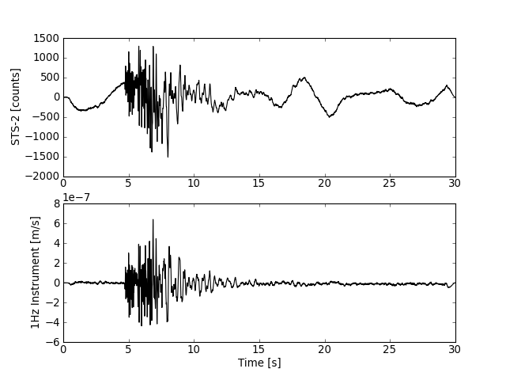
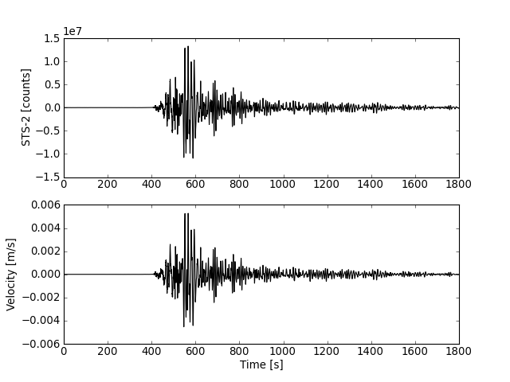

13. Seismometer Correction/Simulation¶
13.1. Using a PAZ dictionary¶
The following script shows how to simulate a 1Hz seismometer from a STS-2 seismometer with the given poles and zeros. Poles, zeros, gain (A0 normalization factor) and sensitivity (overall sensitivity) are specified as keys of a dictionary.
from obspy.core import read
from obspy.signal import cornFreq2Paz
paz_sts2 = {
'poles': [-0.037004 + 0.037016j, -0.037004 - 0.037016j, -251.33 + 0j,
- 131.04 - 467.29j, -131.04 + 467.29j],
'zeros': [0j, 0j],
'gain': 60077000.0,
'sensitivity': 2516778400.0}
paz_1hz = cornFreq2Paz(1.0, damp=0.707) # 1Hz instrument
paz_1hz['sensitivity'] = 1.0
st = read()
# make a copy to keep our original data
st_orig = st.copy()
# Simulate instrument given poles, zeros and gain of
# the original and desired instrument
st.simulate(paz_remove=paz_sts2, paz_simulate=paz_1hz)
# plot original and simulated data
st_orig.plot()
st.plot()
[source code, hires.png, pdf]


[source code, hires.png, pdf]


For more customized plotting we could also work with matplotlib manually from here:
import numpy as np
import matplotlib.pyplot as plt
tr = st[0]
tr_orig = st_orig[0]
t = np.arange(tr.stats.npts) / tr.stats.sampling_rate
plt.subplot(211)
plt.plot(t, tr_orig.data, 'k')
plt.ylabel('STS-2 [counts]')
plt.subplot(212)
plt.plot(t, tr.data, 'k')
plt.ylabel('1Hz Instrument [m/s]')
plt.xlabel('Time [s]')
plt.show()
[source code, hires.png, pdf]


13.2. Using a RESP file¶
It is further possible to use evalresp to evaluate the instrument response information from a RESP file.
from obspy.iris import Client
from obspy.core import UTCDateTime
from obspy.core.util import NamedTemporaryFile
import matplotlib.pyplot as plt
import numpy as np
import os
# MW 7.1 Darfield earthquake, New Zealand
t1 = UTCDateTime("2010-09-3T16:30:00.000")
t2 = UTCDateTime("2010-09-3T17:00:00.000")
# Fetch waveform from IRIS web service into a ObsPy stream object
client = Client()
st = client.getWaveform('NZ', 'BFZ', '10', 'HHZ', t1, t2)
# Download and save instrument response file into a temporary file
respf = NamedTemporaryFile().name
client.saveResponse(respf, 'NZ', 'BFZ', '10', 'HHZ', t1, t2, format="RESP")
# make a copy to keep our original data
st_orig = st.copy()
# define a filter band to prevent amplifying noise during the deconvolution
fl1 = 0.005
fl2 = 0.006
fl3 = 30.
fl4 = 35.
# this can be the date of your raw data or any date for which the
# SEED RESP-file is valid
date = t1
seedresp = {'filename': respf, # RESP filename
'date': date,
'units': 'VEL' # Units to return response in ('DIS', 'VEL' or ACC)
}
# Remove instrument response using the information from the given RESP file
st.simulate(paz_remove=None, pre_filt=(fl1, fl2, fl3, fl4), seedresp=seedresp)
# plot original and simulated data
tr = st[0]
tr_orig = st_orig[0]
time = np.arange(tr.stats.npts) / tr.stats.sampling_rate
plt.subplot(211)
plt.plot(time, tr_orig.data, 'k')
plt.ylabel('STS-2 [counts]')
plt.subplot(212)
plt.plot(time, tr.data, 'k')
plt.ylabel('Velocity [m/s]')
plt.xlabel('Time [s]')
plt.show()
# cleanup - delete temporary file
os.remove(respf)
[source code, hires.png, pdf]

